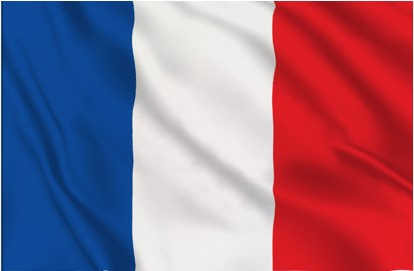
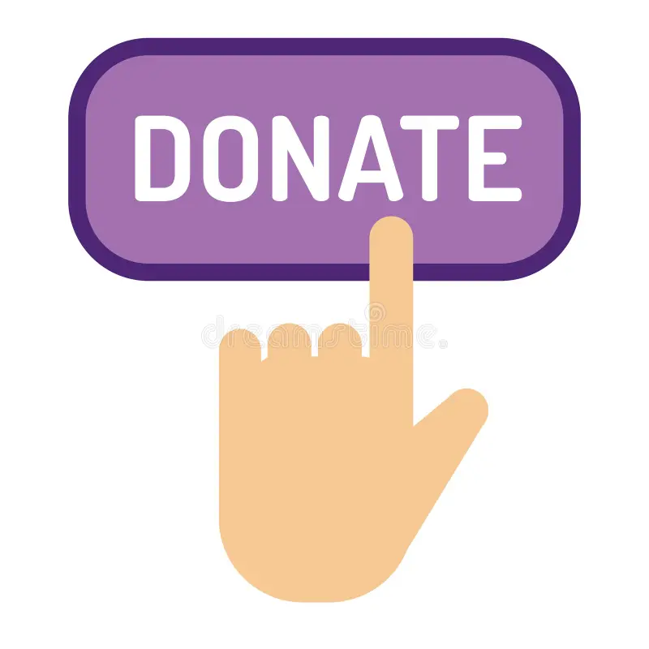

In one spoonful discover the pleasure of healthy eating.
discover how our spreads are made.
More information About
We have been a father-to-son business since 1876. Our values are based on sustainable development.
Projects
We are working on various projects to improve our spread.
Events
Participate in our events and join us to find out more about our company.
What is the benefits ?

The antioxidants found in cashews help reduce stress and inflammation, which may protect liver cells. Additionally, unsaturated fatty acids, especially oleic acid present at around 27% in cashew, can help reduce cholesterol levels, thereby promoting one's overall health.
Cajoux in respect of the environment
Cashew Spread: A Delicious and Ecological Choice :
In a world where protecting the environment is more essential than ever, our Cajoux products are part of a sustainable development approach. Made from organically grown cashew nuts, our paste is not only tasty, it's also kind to the planet.
An ecological alternative to industrial products:
Unlike conventional spreads, which are often rich in palm oil and additives, our cashew spread uses simple, natural ingredients. By choosing cashews, we reduce the ecological footprint associated with the production of palm oil, which is responsible for deforestation in certain regions of the world. Our producers are committed to sustainable agriculture, reducing the use of pesticides and chemical fertilisers.
An eco-responsible glass jar:
Each jar of our products is packaged in recyclable packaging designed to reduce waste. By buying our products, you are helping to reduce the use of polluting materials while making a sustainable choice for the planet.
A local and supportive approach:
Our various products come from local producers committed to sustainable and fair farming practices. We favour short supply chains, limiting the impact of transport on the environment. By choosing our cashew spread, you're supporting a local economy while looking after your health with a nutrient-rich product.
Reduced environmental impact
Our approach goes beyond the simple product:
We strive to reduce our carbon footprint at every stage of the manufacturing process. The energy used in our workshops comes from renewable sources and our manufacturing processes are optimised to consume as little water and energy as possible.
Partenariats
Learn about our partners and how we work together to promote our cashew products in our region.
Donation
Your support is essential to allow us to continue our mission. Make a donation today to help promote our spreads.
Donation